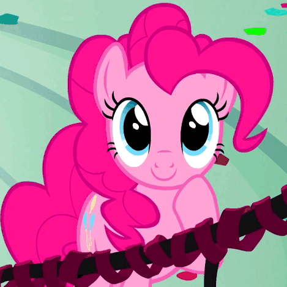

Pinkie Pie
A character from the animated series, My Little Pony: Friendship is Magic
My Little Pony: Friendship is Magic was the flagship work in the fourth generation of the long-running My Little Pony franchise, incorporating self-aware humor, a more streamlined art style, and strong characterization. It lasted nine seasons with 222 episodes, airing on Discovery Family (formerly The Hub) in the United States and Treehouse TV in Canada from 2010 to 2019. The first season was helmed by Lauren Faust, a highly accomplished, Emmy Award-nominated animator. Friendship is Magic is her attempt to rescue the genre of girls' cartoons by presenting a clever show with a strong and diverse cast of female characters who aren't preoccupied with fashion and boys. Her goal was to create an intelligent show for girls that boys and grown-ups could also watch without wanting to shoot themselves. As the substantial Periphery Demographic can attest, she seems to have succeeded. Following the end of the first season, Faust stepped down as the show's executive producer, but she continued to work with the show as a consulting producer through production of the second season.
The series stars a unicorn pony named Twilight Sparkle, a student of Princess Celestia, the ruler of the magical land of Equestria. The princess gives Twilight the task of learning about friendship and sends her and her assistant, a baby dragon named Spike, to Ponyville. There, they meet some interesting ponies, including action-loving Rainbow Dash, glamorous Rarity, hard-working Applejack, timid Fluttershy, and hyperactive Pinkie Pie. Together, they go on adventures, solve various problems, and learn about the magic of friendship.